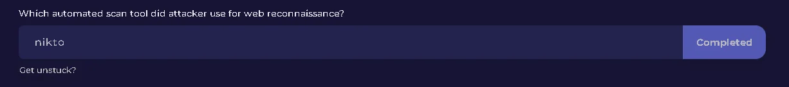
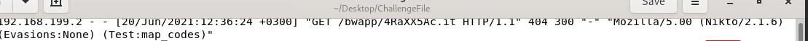

Investigate Web Attack
- Categoria
- Ataques Web
- Caso
- WEB-01
- Registro
- Em revisão
Resumo
Exercício de investigação retrospectiva a partir de logs de um servidor web.
Passo a passo da investigação
1. Reconhecimento automatizado


Os registros mostraram atividade compatível com reconhecimento automatizado. A hipótese anotada foi o uso de Nikto. O exercício está marcado para revisão.
2. Indícios de persistência
Também procurei indícios de persistência na máquina investigada. O último registro levantou uma hipótese de persistência, mas não confirmou que a ação ocorreu no host.
Exercício simulado. Algumas capturas foram recortadas ou tiveram campos ocultados.